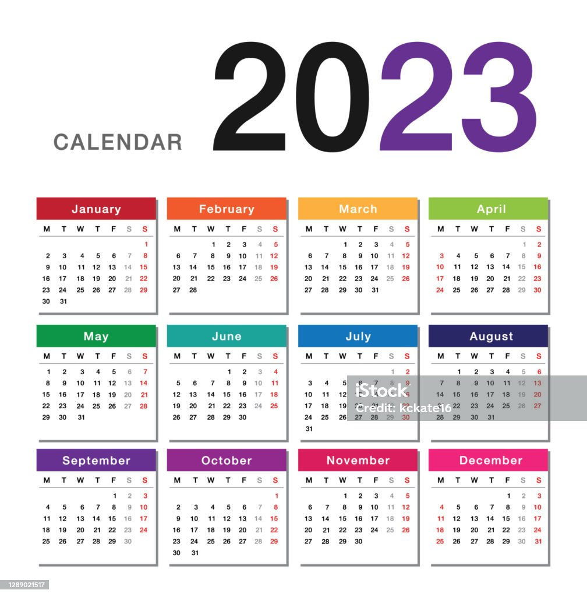
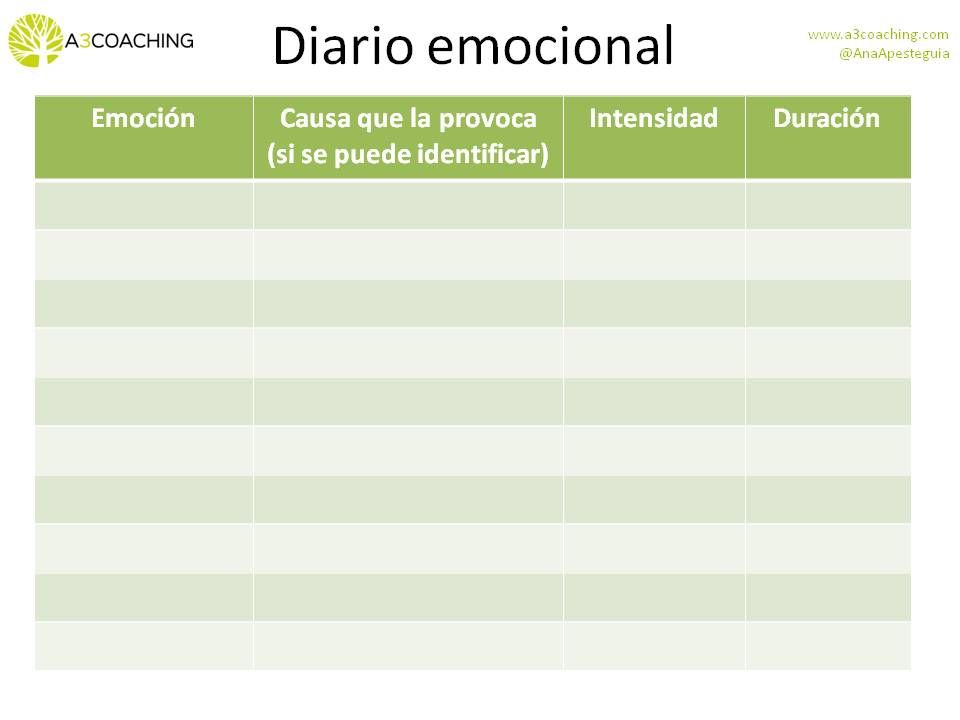
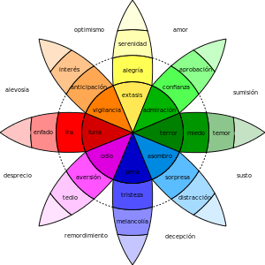
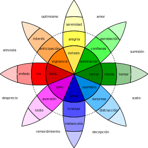

Registra.
Bienvenidos, este espacio va a estar dedicado a la potente herramienta de llevar registros personales. En un mundo lleno de información y cambios constantes, la capacidad de documentar y analizar nuestro progreso y experiencias personales se vuelve esencial. En esta página, exploraremos en detalle por qué llevar registros personales es una práctica fundamental para el crecimiento y el éxito en diversas áreas de la vida. Descubriremos cómo estos registros pueden ayudarnos a tomar decisiones más informadas, a establecer y alcanzar metas, y a mantener un control eficiente de nuestras vidas. Acompáñanos en este viaje hacia la comprensión de la importancia de llevar registros personales y cómo puede mejorar significativamente la calidad de tu vida.
 Las emociones básicas Así que empezamos a resolver las dudas dando respuesta a los interrogantes, por ejemplo, qué son las emociones básicas. Vamos a ello. Las emociones básicas son aquellas que se expresan desde el nacimiento o los primeros meses de vida y son innatas y universales, es decir que existen en todas las razas, en todos los continentes y en todas las culturas. Existen teorías diferentes pero una de las más conocidas y aceptadas es la de Robert Plutchik, que plantea 8 emociones básicas, y el resto como una combinación de ellas. Utiliza un círculo de emociones muy visual, análogo al círculo cromático, en el que la mezcla de colores elementales proporciona otros. Según esta teoría existen 8 emociones básicas que pueden tener 3 intensidades, con lo que obtenemos 24 emociones. A partir de aquí la combinación de las emociones básicas (lo que se denomina díadas) va generando el resto.
 
